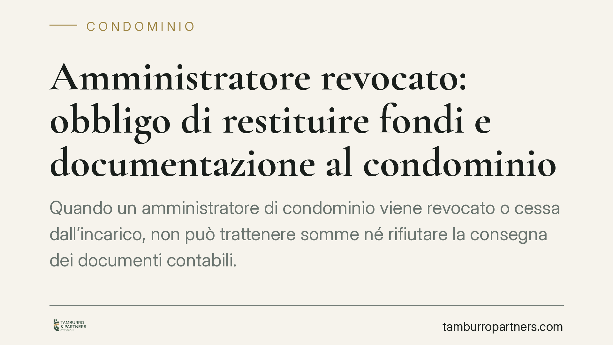

Amministratore revocato: obbligo di restituire fondi e documentazione al condominio
Quando un amministratore di condominio viene revocato o cessa dall'incarico, non può trattenere somme né rifiutare la consegna dei documenti contabili. La giurisprudenza consolidata inquadra il rapporto come mandato e impone un rendiconto puntuale, vietando compensazioni decise in autonomia. Un principio che tutela i condòmini e definisce con chiarezza il passaggio di consegne tra vecchia e nuova gestione.

Il principio: il rapporto è un mandato
L'amministratore di condominio agisce come mandatario dei condòmini. Questo significa che gestisce denaro e interessi altrui e deve renderne conto. La cornice è duplice: l'art. 1713 del Codice civile, sul mandato in generale, e l'art. 1129 c.c., che disciplina specificamente gli obblighi dell'amministratore condominiale.
Secondo l'orientamento giurisprudenziale prevalente, alla cessazione del rapporto — per revoca, dimissioni o scadenza del mandato — l'ex amministratore ha due obblighi distinti e autonomi: restituire le somme del condominio ancora in suo possesso e consegnare l'intera documentazione contabile e amministrativa.
Inquadramento normativo
L'art. 1713 c.c. stabilisce che il mandatario deve rendere al mandante il conto del suo operato e rimettergli tutto ciò che ha ricevuto in forza dell'incarico. Applicato al condominio, ciò comprende i fondi di cassa, i saldi dei conti correnti condominiali e ogni somma incassata a qualunque titolo.
L'art. 1129, comma 8, c.c. è ancora più specifico: alla cessazione dell'incarico l'amministratore è tenuto a consegnare tutta la documentazione in suo possesso relativa al condominio e ai singoli condòmini, oltre a eseguire le attività urgenti per evitare pregiudizi agli interessi comuni. Le due norme si integrano: il 1713 fonda l'obbligo di rendiconto e restituzione, il 1129 lo declina sul piano condominiale, con tempi stringenti nel passaggio di consegne.
Restituzione dei fondi e credito dell'amministratore sono due piani diversi
Il punto più delicato riguarda i compensi o le anticipazioni che l'amministratore ritiene di vantare nei confronti del condominio. Un errore frequente è trattenere somme condominiali a copertura del proprio credito, operando una compensazione di fatto.
Questa prassi non è legittima. L'obbligo di restituire i fondi del condominio è autonomo rispetto all'eventuale diritto dell'amministratore a essere pagato. Se ritiene di avere un credito, deve farlo valere con un'autonoma azione: domanda di pagamento, decreto ingiuntivo o altra iniziativa, nel contraddittorio con l'assemblea. Non può decidere unilateralmente di compensare, perché il denaro condominiale non gli appartiene.
Approvazione del rendiconto e restituzione: distinzione necessaria
Va tenuta distinta anche la posizione sul rendiconto. L'eventuale mancata approvazione del consuntivo da parte dell'assemblea non sospende né esclude l'obbligo di restituire quanto in cassa e di consegnare i documenti. Sono questioni separate: l'approvazione attiene alla correttezza della gestione, la restituzione attiene alla titolarità delle somme. Trattenere la cassa in attesa che il rendiconto sia approvato non trova fondamento.
Implicazioni pratiche per il condominio
Per il condominio e il nuovo amministratore, il principio significa poter pretendere senza condizioni la consegna di cassa, documenti e saldi. Se il predecessore oppone resistenze, restano disponibili strumenti giudiziali, anche di natura cautelare: in presenza dei presupposti di urgenza, il condominio può valutare un ricorso ex art. 700 c.p.c. per ottenere la consegna della documentazione indispensabile alla gestione, evitando pregiudizi alle attività comuni.
Per chi lascia l'incarico, il messaggio è chiaro: il passaggio di consegne va eseguito in modo trasparente e tempestivo, documentando ogni operazione. Eventuali pretese economiche vanno canalizzate nelle sedi proprie, non trasformate in trattenute arbitrarie.
Cosa fare in concreto
- Formalizzare la richiesta via PEC: intimare all'ex amministratore la restituzione dei fondi e la consegna della documentazione, fissando un termine preciso.
- Redigere un verbale di consegna analitico: cassa, estratti conto, registri, contratti, fascicoli dei singoli condòmini e pratiche in corso.
- Non accettare compensazioni di fatto: la cassa va restituita per intero; l'eventuale credito dell'amministratore si discute separatamente.
- Verificare la contabilità: è opportuno far esaminare la documentazione da un professionista per rilevare ammanchi o incongruenze.
- Valutare la tutela giudiziale: in caso di inerzia, considerare l'azione di rendiconto e, se vi è urgenza, il ricorso cautelare.
Disclaimer
Contributo informativo a cura di Tamburro & Partners — Avv. Giuseppe Tamburro. Non costituisce parere legale.
Ogni condominio ha una storia a sé.
Se gestisci un'amministrazione e vuoi un confronto su una specifica questione condominiale, scrivi allo studio. Ti rispondiamo entro un giorno lavorativo.